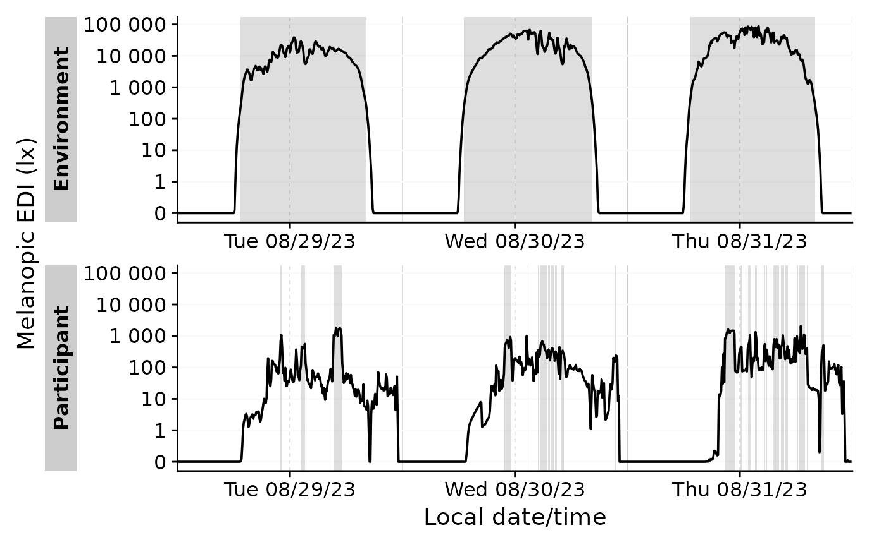
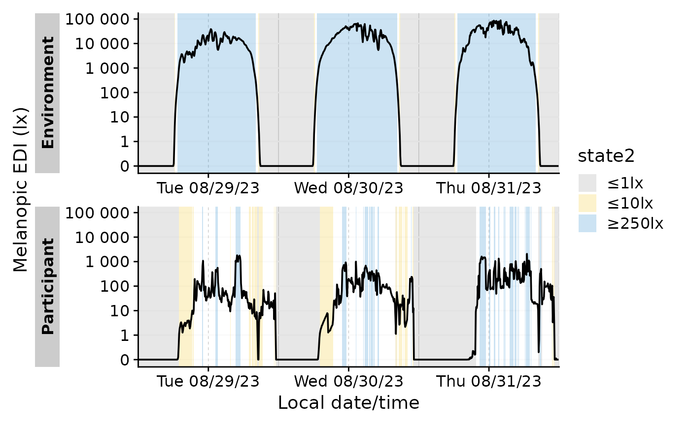
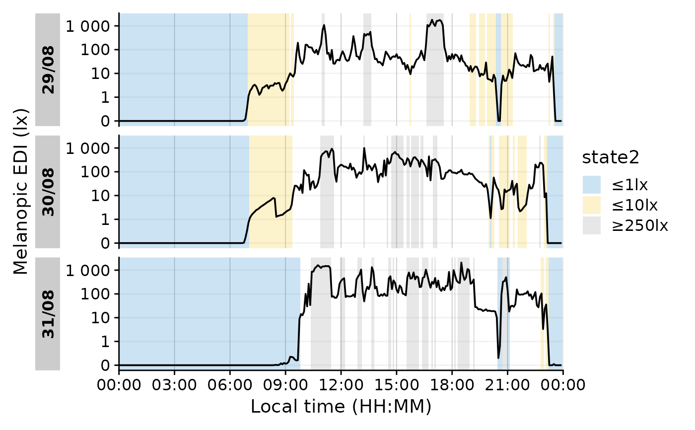
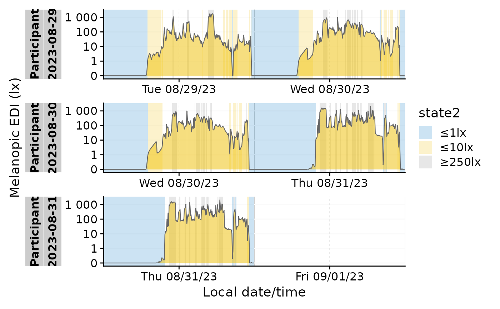
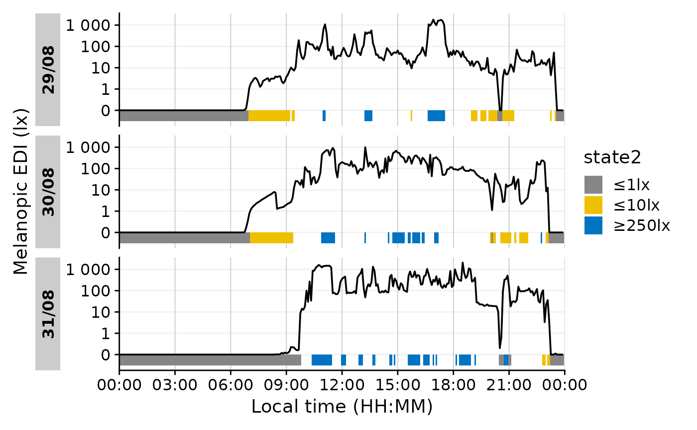
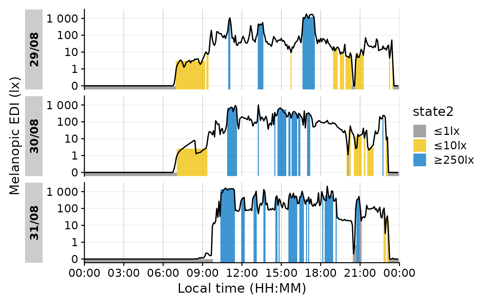
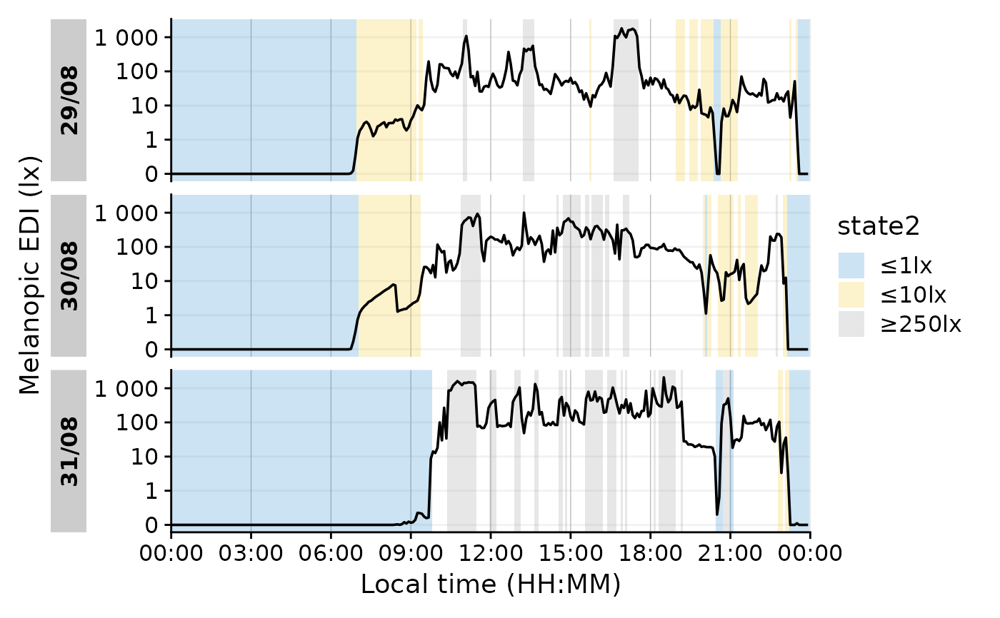
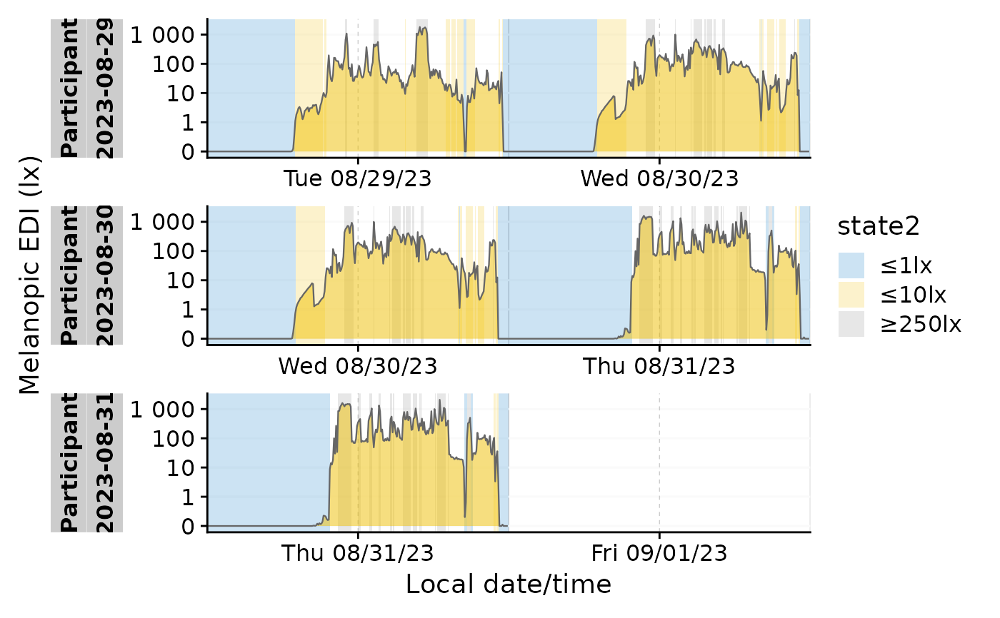
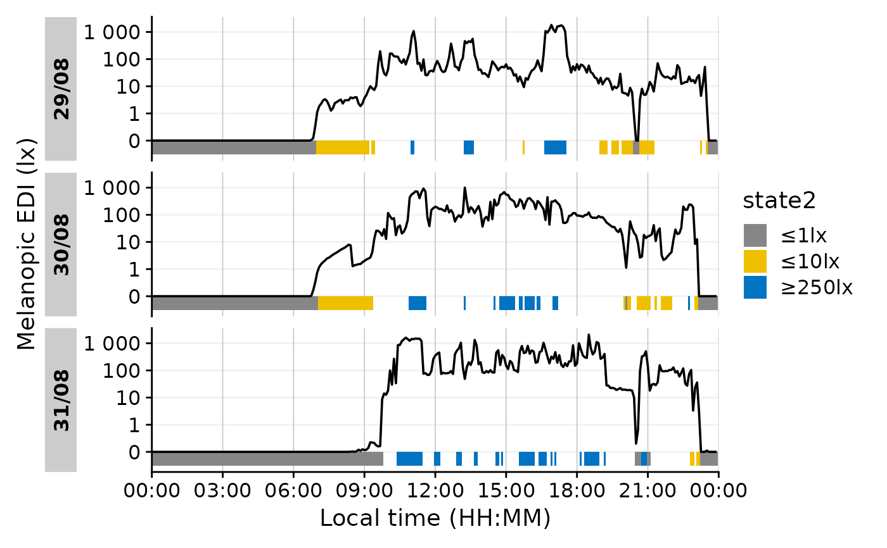
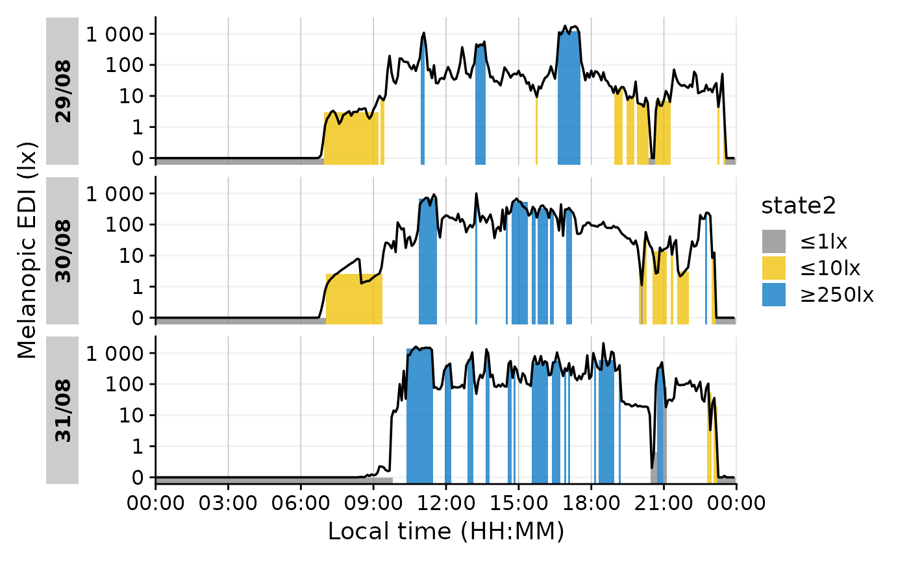

gg_states() is a helper function to add state information to plots
generated with gg_day(), gg_days(), or gg_doubleplot(). The function
can draw on any column in the dataset, but factor-like or logical columns
make the most sense.
Usage
gg_states(
ggplot_obj,
State.colname,
aes_fill = NULL,
aes_col = NULL,
ymin = -Inf,
ymax = Inf,
Datetime.colname = Datetime,
alpha = 0.2,
on.top = FALSE,
ignore.FALSE = TRUE,
extract.metric = NULL,
return.state.data = FALSE,
...
)Arguments
- ggplot_obj
A
ggplotobject generated withgg_day()orgg_days()(orgg_doubleplot().- State.colname, Datetime.colname
The colnames of the state to add to the plot, and the column containing the datetimes. Must be part of the dataset. Expects a
symbol.- aes_fill, aes_col
conditional aesthetics for
ggplot2::geom_rect(). The default (NULL) will be ignored, so thatcolandfillarguments can be set through the...arguments. As the states work from a summarized dataset, only a few columns are available for filling/coloring: TheState.colname, Grouping variables, and variables created by usingextract_states().- ymin, ymax
customize the height of the state rectangle. By default it will cover the whole vertical range (-Inf, Inf), but can be set to any value, including variables generated by
extract_states(), which generates the data for the geom. New variables are accessible through theextract_metricsargument.- alpha
A numerical value between 0 and 1 representing the transparency of the states. Default is 0.2.
- on.top
Logical scalar. If
TRUE, the states will be plotted on top of the existing plot. IfFALSE, the states will be plotted underneath the existing plot. Default isFALSE.- ignore.FALSE
Logical that drops
FALSEvalues of a logical state column, so that onlyTRUEvalues are recognized as a state. Is only relevant for logical state columns and will be ignored otherwise. Default isTRUE.- extract.metric
Expression to be used in
extract_metric(). Can be used to extract additional information that is then available foraes_fill,aes_col,ymin, andymax. Requires a list containing variable names and formulas to be converted into calls. E.g., calculating the median during each state would requirelist(new_metric = ~median(MEDI)). Thennew_metricis available for the conditional arguments.- return.state.data
Used for debugging. Returns a tibble with the extracted state data. If you are uncertain what information is available, set this to
TRUE.- ...
Additional arguments given to the
ggplot2::geom_rect()used to construct the state shading. Can be used to change the fill color or other aesthetic properties.
Examples
#creating a simple TRUE/FALSE state in the sample data: Light above 250 lx mel EDI
#and a second state that cuts data into chunks relating to the Brown et al. 2022 thresholds
#(+aggregating Data to 5 minute intervals & reducing it to three days)
state_data <-
sample.data.environment |>
dplyr::mutate(state = MEDI > 250) |>
Brown_cut(MEDI, state2) |>
aggregate_Datetime(unit = "5 mins") |>
filter_Datetime(length = "3 days")
state_data |>
gg_days() |>
gg_states(state)

#state 2 has more than one valid state, thus we need to assign a fill aesthetic
state_data |>
gg_days() |>
gg_states(state2, aes_fill = state2) +
ggplot2::scale_fill_manual(values=c("#868686FF", "#EFC000FF", "#0073C2FF"))
#> Scale for fill is already present.
#> Adding another scale for fill, which will replace the existing scale.

#this line is simply for sensible colors
#same, but with gg_day()
state_data |>
dplyr::filter(Id == "Participant") |>
gg_day(geom = "line") |>
gg_states(state, fill = "red")
 #more complex state
state_data |>
dplyr::filter(Id == "Participant") |>
gg_day(geom = "line") |>
gg_states(state2, aes_fill = state2)

#with gg_doubleplot
state_data |>
dplyr::filter(Id == "Participant") |>
gg_doubleplot() |>
gg_states(state2, aes_fill = state2)

#setting the height of the bars
state_data |>
dplyr::filter(Id == "Participant") |>
gg_day(geom = "line") |>
gg_states(state2, aes_fill = state2, ymin= -0.5, ymax = 0, alpha = 1) +
ggplot2::scale_fill_manual(values=c("#868686FF", "#EFC000FF", "#0073C2FF"))
#> Scale for fill is already present.
#> Adding another scale for fill, which will replace the existing scale.

#setting the height of the bars conditionally based on the median value
state_data |>
dplyr::filter(Id == "Participant") |>
gg_day(geom = "line") |>
gg_states(state2, aes_fill = state2, ymin= -Inf, ymax = median, alpha = 0.75,
extract.metric = list(median = ~median(MEDI))) +
ggplot2::scale_fill_manual(values=c("#868686FF", "#EFC000FF", "#0073C2FF"))
#> Scale for fill is already present.
#> Adding another scale for fill, which will replace the existing scale.

#more complex state
state_data |>
dplyr::filter(Id == "Participant") |>
gg_day(geom = "line") |>
gg_states(state2, aes_fill = state2)

#with gg_doubleplot
state_data |>
dplyr::filter(Id == "Participant") |>
gg_doubleplot() |>
gg_states(state2, aes_fill = state2)

#setting the height of the bars
state_data |>
dplyr::filter(Id == "Participant") |>
gg_day(geom = "line") |>
gg_states(state2, aes_fill = state2, ymin= -0.5, ymax = 0, alpha = 1) +
ggplot2::scale_fill_manual(values=c("#868686FF", "#EFC000FF", "#0073C2FF"))
#> Scale for fill is already present.
#> Adding another scale for fill, which will replace the existing scale.

#setting the height of the bars conditionally based on the median value
state_data |>
dplyr::filter(Id == "Participant") |>
gg_day(geom = "line") |>
gg_states(state2, aes_fill = state2, ymin= -Inf, ymax = median, alpha = 0.75,
extract.metric = list(median = ~median(MEDI))) +
ggplot2::scale_fill_manual(values=c("#868686FF", "#EFC000FF", "#0073C2FF"))
#> Scale for fill is already present.
#> Adding another scale for fill, which will replace the existing scale.
